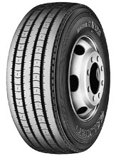
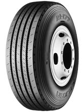

产品展厅
/
飞劲轮胎
请选择轮胎样式:

RI-128
钢丝带束层子午线轮胎
// 条形花纹设计用于公路导向轮和拖车上
// 优良的耐磨性、耐久性和高速上的操作性能
// 优良的湿路面上的稳定性
RI-117
钢丝带束层子午线轮胎
// 条形花纹设计用于公路导向轮和拖车上
// 改进耐不规则磨耗性能

RI-177
钢丝带束层子午线轮胎
// 极强的耐磨耗性能、耐久性能
// 适用于高速路行驶及拖车
GI-348
钢丝带束层子午线轮胎
// 钢丝带束层子午线轮胎
// 2004年最新推出的加强性抗载子午线轮胎，适用长途高速行驶
// 优良的牵引性能和改良型的长距离使用，并改进不规则磨耗
BI-867
钢丝带束层子午线轮胎
// 特殊优良的牵引花纹设计
// 在湿和干路面上的优良稳定性
// 深花纹设计提供特别长的使用寿命
BI-807D
钢丝带束层子午线轮胎
// 块状花纹适用公路使用的驱动轮上
// 优良的牵引性能和刹车性能，坚韧的深块状花纹延长了轮胎的使用寿命
MI-527
钢丝带束层子午线轮胎
// 花纹设计适合于各种季节使用
// 可用于雪泥路面上使用
// 优良的湿路面的牵引性能和长途行驶低生热，耐不规则磨损
GI-337
钢丝带束层子午线轮胎
// 条形/横向花纹用于公路和非公路设计，用于车辆上的各个位置上
// 优良的牵引性能和改良型的长距离使用，并改进耐不规则磨耗
Copyright © 2009 STAMFORDTYRES / Design by
LeaskH.com
/ 粤ICP备09048121号 / TEL:020-38201460